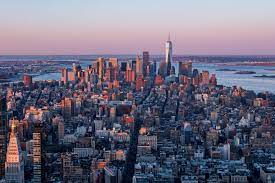

Welcome to QCC. Click here

Mayor Adams Signs "Small Business Forward" Executive Order to Reform Small Business Violations
January 4, 2022
NEW YORK—Mayor Eric Adams today signed the “Small Business Forward” Executive Order to reform existing business regulations, ensuring local businesses face fewer needless fines and penalties. The Executive Order builds upon Local Law 80 and calls on the Department of Buildings, Department of Environmental Protection, Department of Sanitation, Fire Department, Department of Consumer and Worker Protection, and the Department of Health and Mental Hygiene to review business regulations with the goal of reducing fine schedules and allowing for cure periods or warnings for first-time violations.
“Our small businesses have been through so much during the COVID-19 pandemic,” said Mayor Eric Adams. “The last thing they need to deal with are unnecessary fines. We’re cutting the red tape and bringing real relief to the entrepreneurs who have made their dreams a reality and keep our local economy strong.”
“New York City is open for business,” said Deputy Mayor for Economic and Workforce Development Maria Torres-Springer. “Under Mayor Adams’ leadership, we’re going to drive real change that cuts red tape and allows small businesses across the five boroughs to power our economic recovery. I look forward to working with my colleagues across government to deliver on this mayoral priority.”
“With this Executive Order, New York City is being decisive and focusing on what municipal government can do right now to help our small businesses,” said incoming Commissioner of the Department of Small Business Services Kevin D. Kim. “This EO makes it clear to every City agency that we, as a city, must work together to reduce unnecessary fines on small businesses for them to thrive. Ultimately this EO will save small businesses millions of dollars and countless hours of dealing with red tape and bureaucracy. By setting a goal of reforming fine schedules and working with businesses who are issued first-time violations, we are implementing smart policy that will help small businesses get back on their feet. Thank you to Mayor Adams for making small businesses a top priority from day one.”
“My in-laws have been small business owners in New York City for 50 years, surviving recessions, hurricanes, blackouts, 9/11, and now a pandemic,” said Joanne Kwong, president and second-generation owner of Pearl River Mart, the longtime Asian American emporium. “For those of us still standing, we’ve made it through the worst but still need support and partnership from government to recover. We are incredibly heartened by Mayor Adams’ commitment to small business and feel hopeful for a new year, new mayoralty, and reenergized New York City.”
Ticket Price | Hour of Operation | Map | Direction
The Metropolitan Museum of Art presents over 5,000 years of art from around the world for everyone to experience and enjoy. The Museum lives in two iconic sites in New York City—The Met Fifth Avenue and The Met Cloisters. Millions of people also take part in The Met experience online.
Since its founding in 1870, The Met has always aspired to be more than a treasury of rare and beautiful objects. Every day, art comes alive in the Museum's galleries and through its exhibitions and events, revealing new ideas and unexpected connections across time and across cultures.
The Met was founded on April 13, 1870, "to be located in the City of New York, for the purpose of establishing and maintaining in said city a Museum and library of art, of encouraging and developing the study of the fine arts, and the application of arts to manufacture and practical life, of advancing the general knowledge of kindred subjects, and, to that end, of furnishing popular instruction."
This statement of purpose has guided the Museum for over 140 years.
On January 13, 2015, the Trustees of The Metropolitan Museum of Art reaffirmed this statement of purpose and supplemented it with the following statement of mission:
The Metropolitan Museum of Art collects, studies, conserves, and presents significant works of art across all times and cultures in order to connect people to creativity, knowledge, and ideas.
| General Admission Tickets | |
|---|---|
| adults | $25 |
| seniors | $17 |
| students | $12 |
| members, patrons, under 12 | Free |